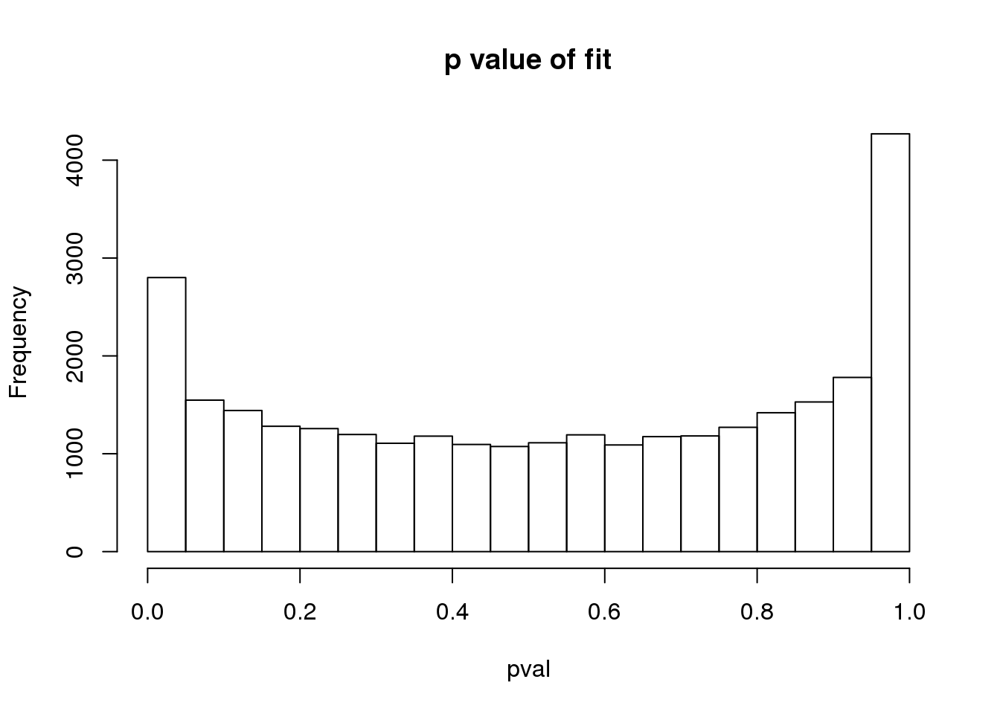
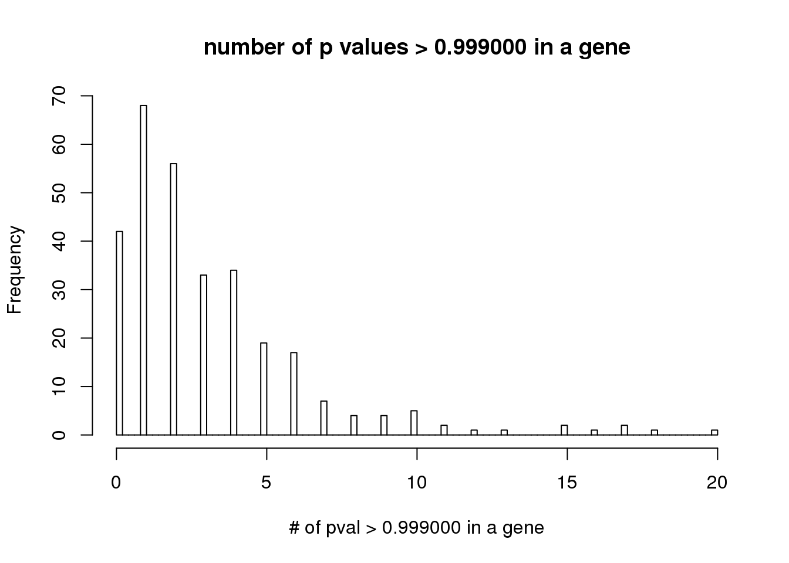
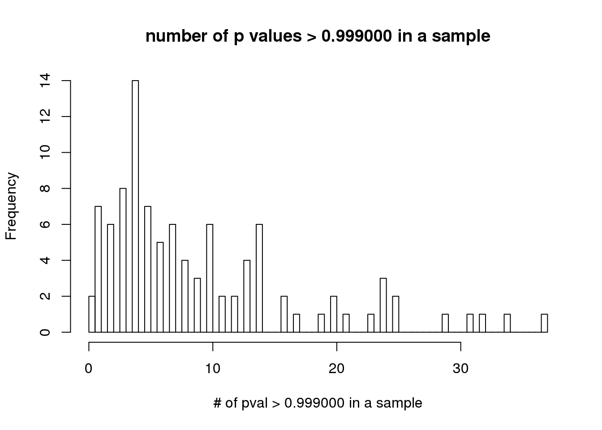
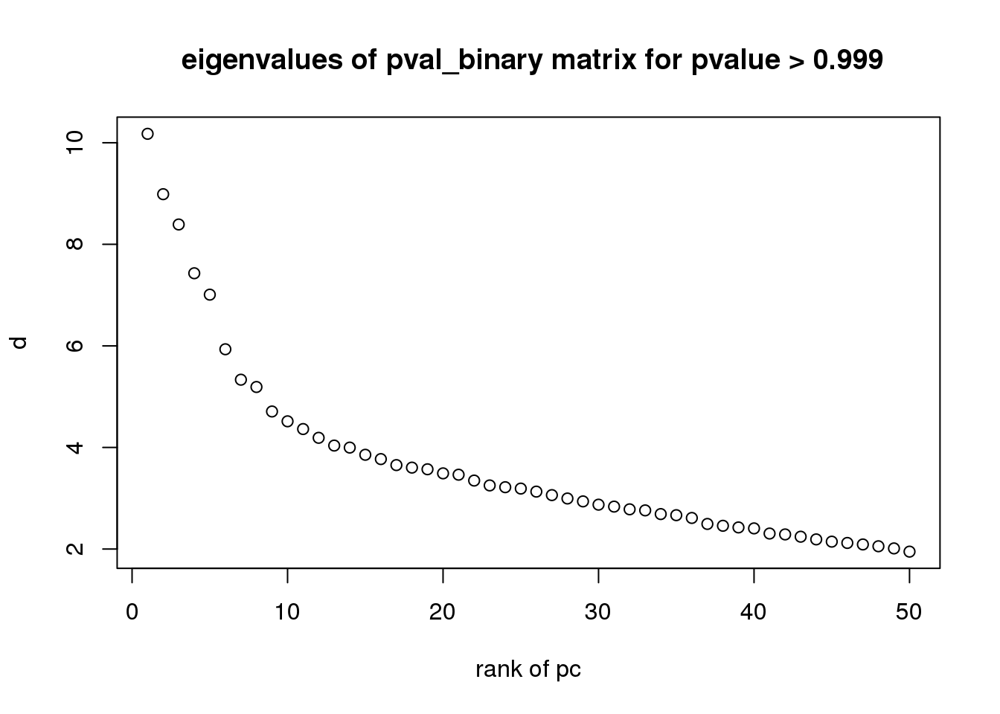

Last updated: 2019-06-24
workflowr checks: (Click a bullet for more information) ✔ R Markdown file: up-to-date
Great! Since the R Markdown file has been committed to the Git repository, you know the exact version of the code that produced these results.
✔ Environment: empty
Great job! The global environment was empty. Objects defined in the global environment can affect the analysis in your R Markdown file in unknown ways. For reproduciblity it’s best to always run the code in an empty environment.
✔ Seed:
set.seed(12345)
The command set.seed(12345) was run prior to running the code in the R Markdown file. Setting a seed ensures that any results that rely on randomness, e.g. subsampling or permutations, are reproducible.
✔ Session information: recorded
Great job! Recording the operating system, R version, and package versions is critical for reproducibility.
✔ Repository version: c21b726
wflow_publish or wflow_git_commit). workflowr only checks the R Markdown file, but you know if there are other scripts or data files that it depends on. Below is the status of the Git repository when the results were generated:
Untracked files:
Untracked: analysis/.ipynb_checkpoints/Experiment_rsvd_betanmf_gtex_d200-checkpoint.ipynb
Untracked: analysis/.ipynb_checkpoints/Experiment_rsvd_betanmf_gtex_d50-checkpoint.ipynb
Untracked: analysis/.ipynb_checkpoints/Experiment_rsvd_fronmf_gtex_d200-checkpoint.ipynb
Untracked: analysis/.ipynb_checkpoints/Experiment_rsvd_fronmf_gtex_d50-checkpoint.ipynb
Untracked: analysis/.ipynb_checkpoints/pval_plot_gtex-checkpoint.ipynb
Untracked: analysis/.ipynb_checkpoints/pval_plot_montoro_droplet-checkpoint.ipynb
Untracked: analysis/index.Rmd
Untracked: analysis/notebook.tex
Untracked: analysis/summary.ipynb
Untracked: bigdata/gtex.csv
Untracked: bigdata/gtex_log.csv
Untracked: bigdata/gtex_log_factors_nmf_hals_f.csv
Untracked: bigdata/gtex_log_factors_nndsvd_K20.csv
Untracked: bigdata/gtex_log_loadings_nmf_hals_f.csv
Untracked: bigdata/gtex_log_loadings_nndsvd_K20.csv
Untracked: bigdata/montoro_droplet.csv
Untracked: bigdata/montoro_droplet.csv.gz
Untracked: bigdata/montoro_droplet_factors_nndsvd_K13.csv
Untracked: bigdata/montoro_droplet_factors_rank1.csv
Untracked: bigdata/montoro_droplet_loadings_nndsvd_K13.csv
Untracked: bigdata/montoro_droplet_loadings_rank1.csv
Untracked: bigdata/montoro_droplet_log.csv
Untracked: bigdata/montoro_droplet_log_factors_nndsvd_K13.csv
Untracked: bigdata/montoro_droplet_log_loadings_nndsvd_K13.csv
Untracked: bigdata/test_factors_nmf_hals_f.csv
Untracked: bigdata/test_factors_rnmf2_hals_f_os10.csv
Untracked: bigdata/test_factors_rnmf_hals_f_os10.csv
Untracked: bigdata/test_factors_rnmf_kl_os10_approx_nndsvd.csv
Untracked: bigdata/test_loadings_nmf2_hals_f_os10.csv
Untracked: bigdata/test_loadings_nmf_hals_f.csv
Untracked: bigdata/test_loadings_nmf_hals_f_os10.csv
Untracked: bigdata/test_loadings_nmf_kl_os10_approx_nndsvd.csv
Untracked: output/fit_gtex_betanmf.Rout
Untracked: output/fit_gtex_log_nmf_hals_f.pyout
Untracked: output/fit_gtex_log_nndsvd_K20.out
Untracked: output/fit_gtex_log_rnmf2_hals_f_os30.Rout
Untracked: output/fit_gtex_log_rnmf2_hals_f_os30.pyout
Untracked: output/fit_gtex_log_rnmf_hals_f_os30.pyout
Untracked: output/fit_gtex_rank1.Rout
Untracked: output/fit_gtex_rnmf_kl_os100_approx_nndsvd.pyout
Untracked: output/fit_gtex_rnmf_kl_os100_approx_rnmf.pyout
Untracked: output/fit_gtex_rough.Rout
Untracked: output/fit_montoro_droplet_betanmf.out
Untracked: output/fit_montoro_droplet_log_nndsvd_K13.out
Untracked: output/fit_montoro_droplet_nndsvd_K13.Rout
Untracked: output/fit_montoro_droplet_nndsvd_K13.out
Untracked: output/fit_montoro_droplet_rank1.Rout
Untracked: output/fit_montoro_droplet_rnmf_kl_os100_approx_nndsvd.pyout
Untracked: output/fit_montoro_droplet_rnmf_kl_os100_approx_rnmf.pyout
Untracked: output/fit_montoro_droplet_rsvd.Rout
Untracked: output/log_transform_gtex.Rout
Untracked: output/log_transform_montoro_droplet.Rout
Untracked: script/.example_rmd.sbatch.swp
Untracked: script/fit_montoro_droplet_betanmf.sbatch
Untracked: script/slurm-60553711.out
Untracked: script/slurm-60575477.out
Untracked: trash/
Unstaged changes:
Deleted: analysis/Experiment_rsvd_betanmf_gtex.ipynb
Modified: analysis/Experiment_rsvd_betanmf_gtex_d200.ipynb
Modified: analysis/Experiment_rsvd_betanmf_gtex_d50.ipynb
Deleted: analysis/Experiment_rsvd_fronmf_gtex.ipynb
Modified: analysis/Experiment_rsvd_fronmf_gtex_d200.ipynb
Modified: analysis/Experiment_rsvd_fronmf_gtex_d50.ipynb
| File | Version | Author | Date | Message |
|---|---|---|---|---|
| Rmd | 1121317 | zihao12 | 2019-06-24 | rmd for pval |
# knitr::opts_chunk$set(echo = TRUE)
# knitr::opts_knit$set(root.dir = '/tmp')
#knitr::opts_chunk$set(root.dir = '~/Desktop/git/lowrank-nmf/analysis/')library(readr)
library(NNLM)
library(rsvd)
source("../code/betanmf.R")
source("../code/misc.R")
data.dir = "../bigdata"
log_transform <- function(X){
return(log(1+X))
}
exp_transform <- function(logX){
return(exp(logX) - 1)
}
pvals_cts <- function(X,Lam){
set.seed(123)
n = nrow(X)
p = ncol(X)
C = matrix(runif(n*p), nrow = n)
pvals = C * ppois(X-1, Lam) + (1-C) * ppois(X, Lam)
return(pvals)
}dataname = "test"
dataname = file.path(data.dir,sprintf("%s.csv", dataname))
counts = read.csv.matrix(dataname)
cat(sprintf("loaded counts: n = %d; p = %d\n", nrow(counts), ncol(counts)))loaded counts: n = 100; p = 300cat(sprintf("Proportion of counts that are non-zero: %0.1f%%.\n",
100*mean(counts > 0)))Proportion of counts that are non-zero: 100.0%.counts_log = log_transform(counts)
K = 5cat(sprintf("number of topics to fit: %d\n", K))number of topics to fit: 5set.seed(123)
cat(sprintf("initialization with NNLM::nnmf\n"))initialization with NNLM::nnmfinit = nnmf(counts_log,K,method = "scd",loss = "mkl",rel.tol = 1e-8,
n.threads = 0,max.iter = 10,inner.max.iter = 4,trace = 1,
verbose = 2)
Iteration | MSE | MKL | Target | Rel. Err.
--------------------------------------------------------------
1 | 0.6951 | 0.1124 | 0.1124 | 2
2 | 0.1208 | 0.0204 | 0.0204 | 1
3 | 0.1190 | 0.0201 | 0.0201 | 0.01
4 | 0.1157 | 0.0196 | 0.0196 | 0.03
5 | 0.1104 | 0.0188 | 0.0188 | 0.04
6 | 0.1053 | 0.0180 | 0.0180 | 0.04
7 | 0.1012 | 0.0174 | 0.0174 | 0.04
8 | 0.0975 | 0.0168 | 0.0168 | 0.03
9 | 0.0941 | 0.0163 | 0.0163 | 0.03
10 | 0.0909 | 0.0158 | 0.0158 | 0.03
--------------------------------------------------------------
Iteration | MSE | MKL | Target | Rel. Err.Warning in system.time(out <- .Call("NNLM_nnmf", A, as.integer(k),
init.mask$Wi, : Target tolerance not reached. Try a larger max.iter.cat(sprintf("fit with betanmf\n"))fit with betanmfstart = proc.time()
fit = betanmf(counts_log,init$W, init$H, verbose = T, eval_every = 10, numiter = 20)iter objective max.diff
10 -1.3623444033e+04 6.26e-01
20 -1.3628462653e+04 4.40e-01runtime = proc.time() - start
cat(sprintf("fit with runtime %f\n", runtime[[3]]))fit with runtime 3.179000Lamhat = fit$A %*% fit$B
Lam = exp_transform(Lamhat)
pval = pvals_cts(counts, Lam)
hist(pval, main = "p value of fit")
threshold = 0.999
pval_bin = pval > threshold
cat(sprintf("percentage of those have p value > %.3f: %f",threshold, sum(pval_bin)/(nrow(pval)*ncol(pval))))percentage of those have p value > 0.999: 0.031467hist(colSums(pval_bin), breaks = 100, xlab = sprintf("# of pval > %f in a gene", threshold),
main = sprintf("number of p values > %f in a gene", threshold))
hist(rowSums(pval_bin), breaks = 100, xlab = sprintf("# of pval > %f in a sample", threshold),
main = sprintf("number of p values > %f in a sample", threshold))
set.seed(12345)
svd_out = rsvd(pval_bin,k = 50)
plot(svd_out$d, xlab = "rank of pc", ylab = "d",
main = sprintf(" eigenvalues of pval_binary matrix for pvalue > %.3f", threshold))
print("see the scale of the eigenvalues")[1] "see the scale of the eigenvalues"svd_out$d [1] 10.175752 8.986830 8.390362 7.430010 7.008577 5.933549 5.333955
[8] 5.190554 4.708257 4.514692 4.362411 4.189893 4.037034 3.997365
[15] 3.855761 3.770799 3.652562 3.603025 3.570370 3.489790 3.463185
[22] 3.347916 3.252077 3.217274 3.190246 3.130599 3.061595 2.995001
[29] 2.937909 2.873371 2.835041 2.781869 2.760690 2.688162 2.666396
[36] 2.611722 2.493820 2.457663 2.425151 2.406372 2.304945 2.287352
[43] 2.242707 2.189628 2.145176 2.119692 2.089959 2.054292 2.012099
[50] 1.948674sessionInfo()R version 3.5.1 (2018-07-02)
Platform: x86_64-pc-linux-gnu (64-bit)
Running under: Scientific Linux 7.4 (Nitrogen)
Matrix products: default
BLAS/LAPACK: /software/openblas-0.2.19-el7-x86_64/lib/libopenblas_haswellp-r0.2.19.so
locale:
[1] LC_CTYPE=en_US.UTF-8 LC_NUMERIC=C
[3] LC_TIME=en_US.UTF-8 LC_COLLATE=en_US.UTF-8
[5] LC_MONETARY=en_US.UTF-8 LC_MESSAGES=en_US.UTF-8
[7] LC_PAPER=en_US.UTF-8 LC_NAME=C
[9] LC_ADDRESS=C LC_TELEPHONE=C
[11] LC_MEASUREMENT=en_US.UTF-8 LC_IDENTIFICATION=C
attached base packages:
[1] stats graphics grDevices utils datasets methods base
other attached packages:
[1] rsvd_1.0.0 NNLM_0.4.2 readr_1.3.1 workflowr_1.1.1
loaded via a namespace (and not attached):
[1] Rcpp_1.0.0 knitr_1.20 whisker_0.3-2
[4] magrittr_1.5 hms_0.4.2 lattice_0.20-38
[7] R6_2.3.0 rlang_0.3.1.9000 stringr_1.3.1
[10] tools_3.5.1 grid_3.5.1 R.oo_1.22.0
[13] git2r_0.23.0 htmltools_0.3.6 yaml_2.2.0
[16] rprojroot_1.3-2 digest_0.6.18 tibble_2.0.1
[19] crayon_1.3.4 Matrix_1.2-15 R.utils_2.7.0
[22] evaluate_0.12 rmarkdown_1.10 stringi_1.2.4
[25] compiler_3.5.1 pillar_1.3.1 backports_1.1.2
[28] R.methodsS3_1.7.1 pkgconfig_2.0.2 This reproducible R Markdown analysis was created with workflowr 1.1.1